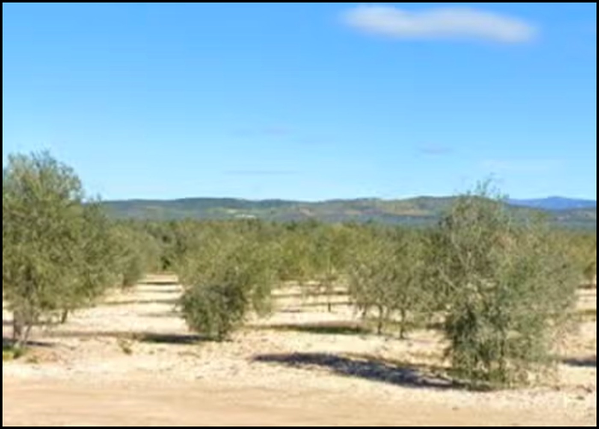
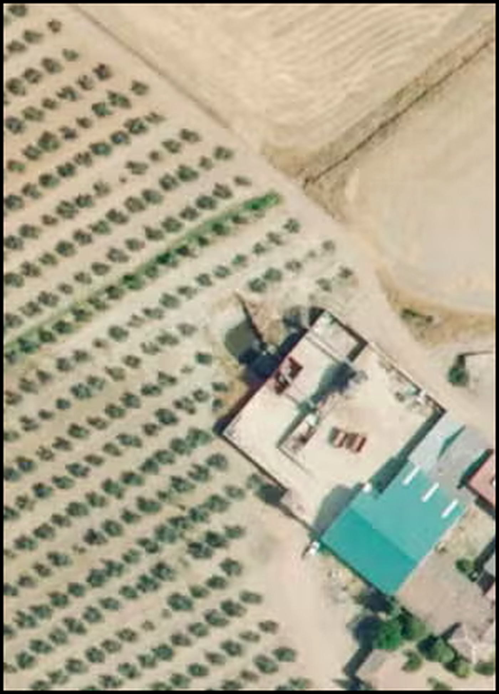
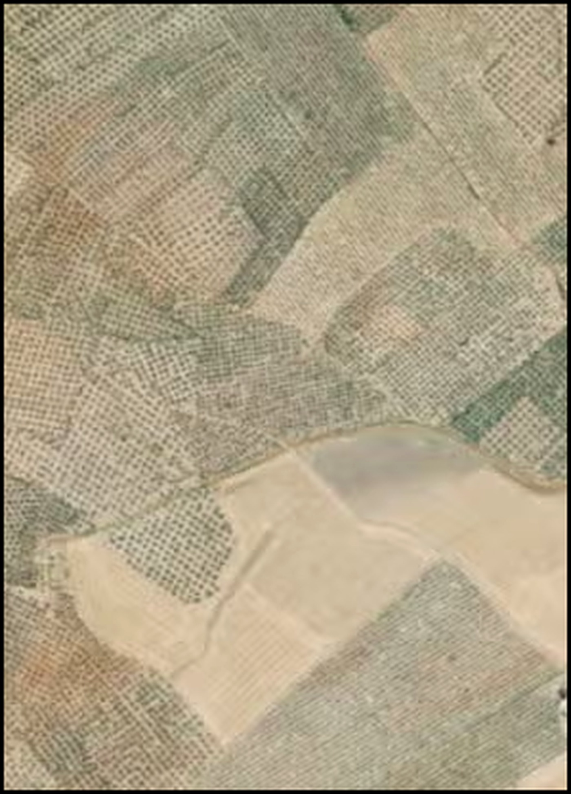
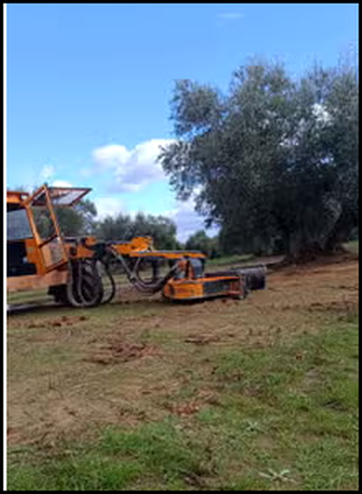
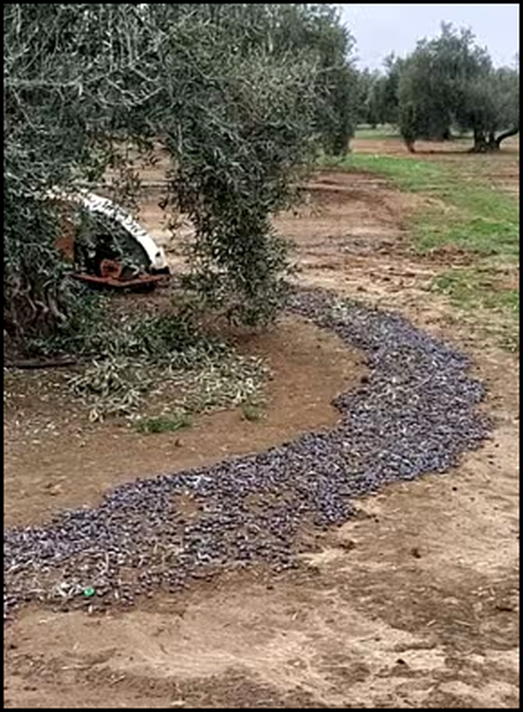
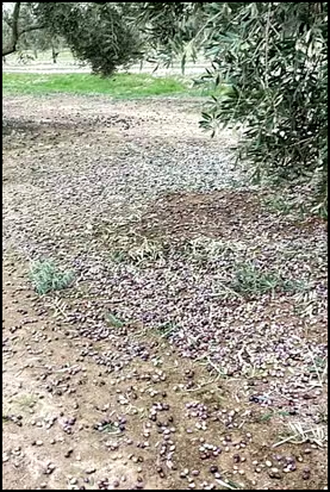

Fotografías de la finca








Descripción
Se vende espectacular finca en una de las zonas más privilegiadas de Jaén, entre Andújar y Guarromán, a pie de carretera.
La finca cuenta con 120 hectáreas de olivos y una plantación aproximada de 22.500 olivos:
- 5.000 olivos marco 8/5 Frantoio plantados hace 7 años.
- 10.000 olivos marco 8/5 Frantoio plantados hace 10 años.
- 3.000 olivos tradicionales centenarios Picual.
- 4.500 olivos marco 8/5 Picual plantados hace 20 años.
La finca dispone de cortijo, naves, maquinaria, herramientas y utillaje, incluyendo 2 tractores, vehículo Ford Ranger, limpiadora, tolva y maquinaria para limpieza y pesaje de aceituna.
Todos los olivos cuentan con goteros de 8 litros, con las gomas enterradas y red eléctrica.
La subvención PAC indicada es de aproximadamente 40.000 €. La cosecha aproximada indicada es de 870.000 kg, con un rendimiento aproximado del 23%.
FINCA LIBRE DE CARGAS. Toda la información registral, hidráulica, subvenciones y productiva debe comprobarse documentalmente antes de cualquier operación.
Hablar con COOINMO